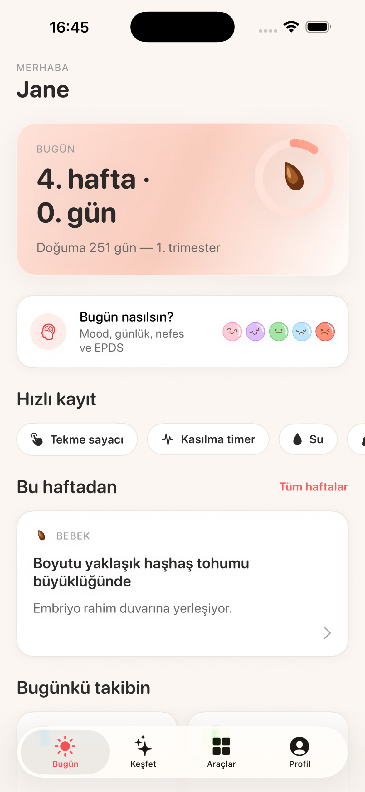
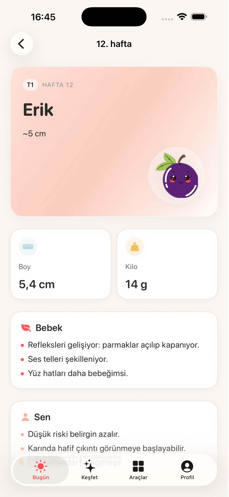
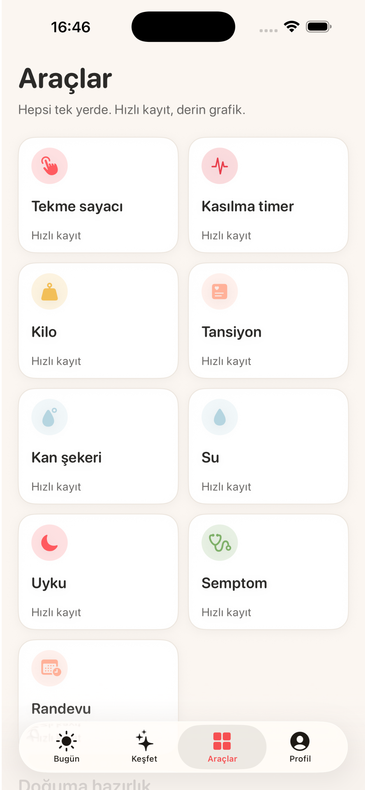
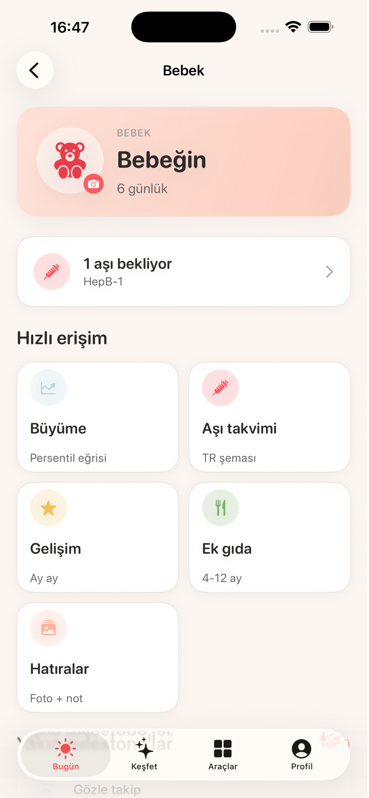
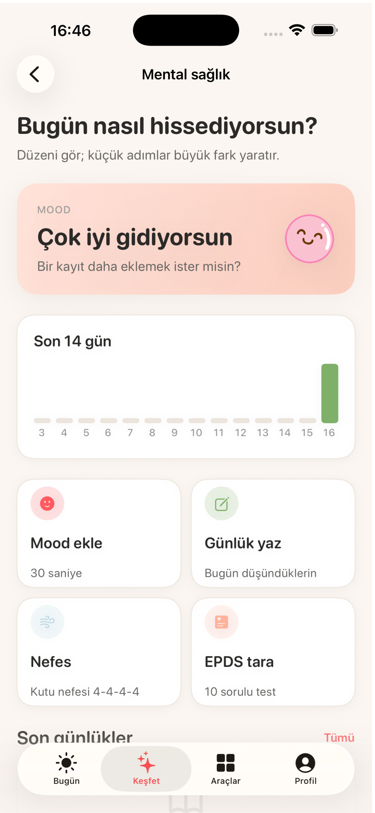
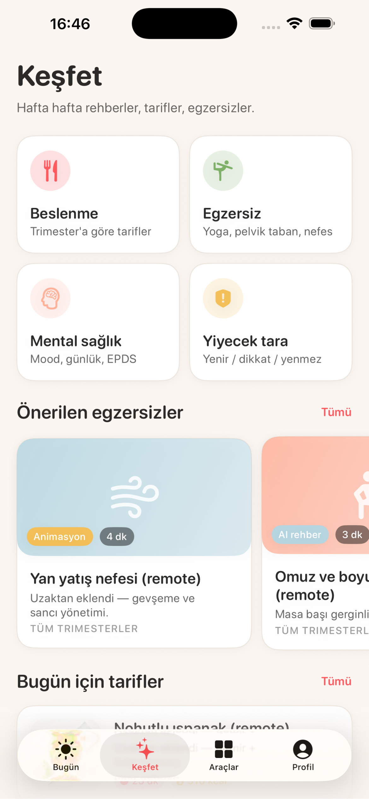

Planlamadan ilk yaşa, hep yanında.
Hamilelik haftalarından lohusalığa, bebek gelişiminden mental sağlığa — tüm yolculuğun tek, sıcak bir uygulamada.
Her şey tek yerde
ÖzelliklerHafta hafta hamilelik
Bebeğin bu hafta ne kadar büyüdü, sende neler değişiyor, ne denemelisin — gün gün rehber.
Sağlık takip araçları
Tekme sayacı, kasılma timer'ı, tansiyon, kilo, kan şekeri, su, uyku ve randevular elinin altında.
Lohusalık modu
Doğum sonrası: emzirme, sağma, bez takibi, iyileşme günlüğü ve nazik bir dil.
Bebek gelişimi 0–24 ay
Büyüme persentilleri, Türkiye aşı takvimi, gelişim basamakları, ek gıda ve hatıralar.
Beslenme & egzersiz
Türk mutfağına uygun tarifler, trimester egzersizleri, pelvik taban rutini ve gıda güvenliği.
Mental sağlık & EPDS
Mood günlüğü, nefes egzersizleri ve Edinburgh doğum sonrası depresyon taraması.
Doğuma hazırlık
Doğum planı (PDF), hastane çantası listesi, acil bilgiler ve yakın hastane bulma.
Tek uygulama, dört dönem
YolculukPlanlama
Hazırlık dönemi, döngü ve sağlıklı başlangıç ipuçları.
Hamilelik
Hafta hafta takip, sağlık araçları ve doğuma hazırlık.
Lohusalık
İlk 6 hafta: iyileşme, emzirme ve şefkatli destek.
Bebek
0–24 ay gelişim, aşılar, ek gıda ve hatıralar.
Uygulamadan kareler
Ekranlar





Verilerin sana ait, cihazında kalır
Beybim hassas anne-bebek verilerini bulutta toplamadan cihazında saklar. KVKK uyumlu, şeffaf ve reklamsız.